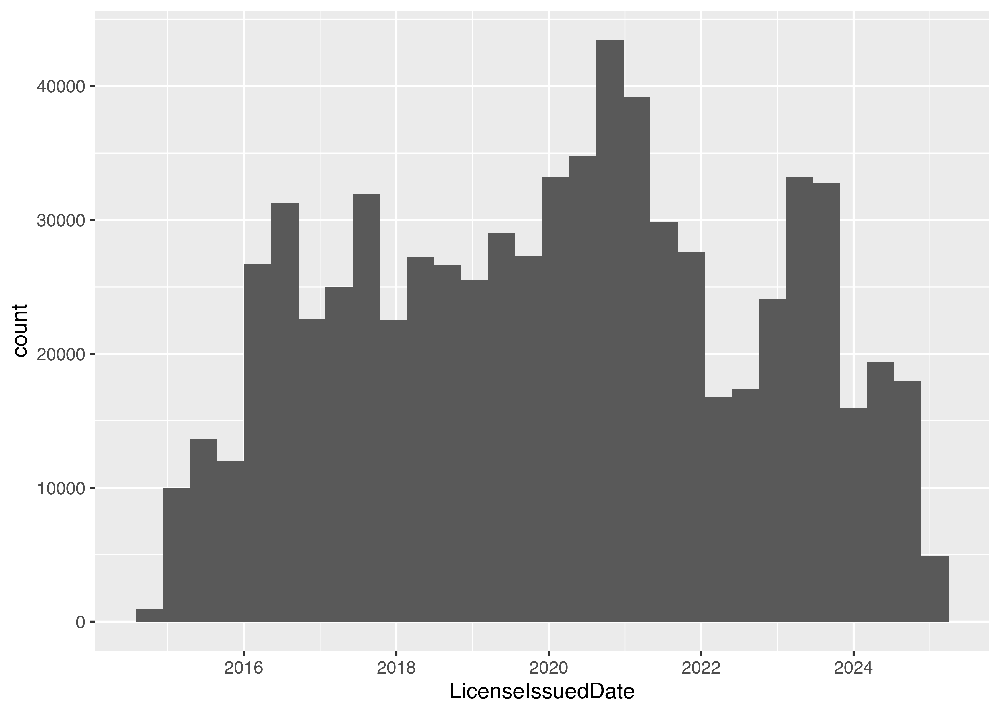
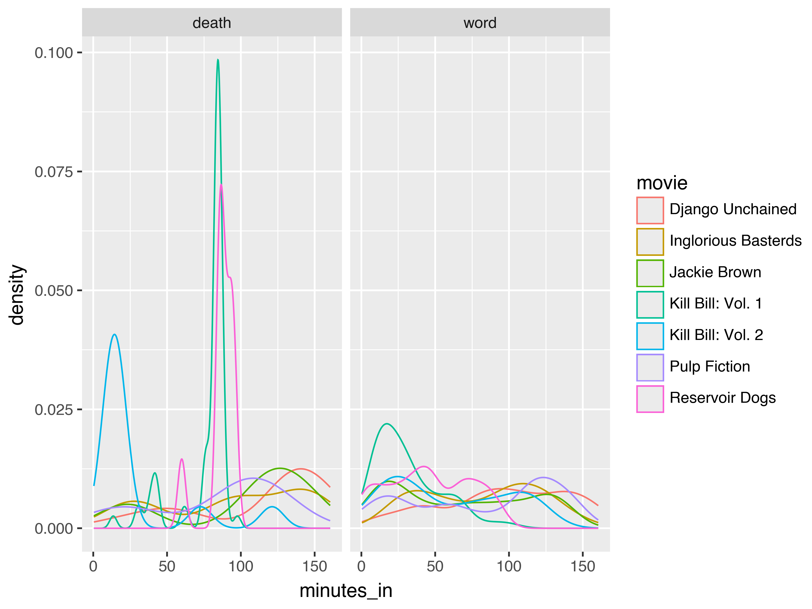

16 Programming With Data
At this point, you’ve learned how to write functions. You know the basics of how to create new variables, how data frames and lists work, and how to use markdown.
And yet… these are skills that take some practice when applied to new data. We’re going to take a break from the fire-hose of syntax you’ve learned and focus on applying what you’ve learned to problems related to data. The goal is to reinforce the skills you’ve already learned and help you find your feet a bit as you work through data analysis.
I’ll provide sample code for tasks like basic plots and tables that we haven’t covered yet - you should feel free to modify and tinker with these chunks as you go along. This chapter will also provide a preview of some of the packages we’re going to work with in the next few sections (because I’m going to show you some code for e.g. summarizing a dataset and plot a few things, even without having covered that material).

As you’ve probably guessed by now, this section will primarily be focused on examples.
16.1 Objectives
Write functions to create simple plots and data summaries
Apply syntax knowledge to reference variables and observations in common data structures
Create new variables and columns or reformat existing columns in provided data structures
16.2 Artwork Dimensions
The Tate Art Museum assembled a collection of 70,000 artworks (last updated in 2014). They cataloged information including accession number, artwork dimensions, units, title, date, medium, inscription, and even URLs for images of the art.
16.2.1 Reading in the Data
import pandas as pd
artwork = pd.read_csv('https://raw.githubusercontent.com/rfordatascience/tidytuesday/master/data/2021/2021-01-12/artwork.csv')16.2.2 Basic Summaries
When you first access a new dataset, it’s fun to explore it a bit. I’ve shown a summary of the variables (character variables summarized with completion rates and # unique values, numeric variables summarized with quantiles and mean/sd) generated using the R skimr and Python skimpy packages (which we’ll talk about in the next chapter).
You may need to run install.packages("skimr") in the R terminal if you have not used the package before.
| Name | artwork |
| Number of rows | 69201 |
| Number of columns | 20 |
| _______________________ | |
| Column type frequency: | |
| character | 12 |
| logical | 1 |
| numeric | 7 |
| ________________________ | |
| Group variables | None |
Variable type: character
| skim_variable | n_missing | complete_rate | min | max | empty | n_unique | whitespace |
|---|---|---|---|---|---|---|---|
| accession_number | 0 | 1.00 | 6 | 7 | 0 | 69201 | 0 |
| artist | 0 | 1.00 | 4 | 120 | 0 | 3336 | 0 |
| artistRole | 0 | 1.00 | 5 | 24 | 0 | 19 | 0 |
| title | 0 | 1.00 | 1 | 320 | 0 | 43529 | 0 |
| dateText | 0 | 1.00 | 4 | 75 | 0 | 2736 | 0 |
| medium | 6384 | 0.91 | 3 | 120 | 0 | 3401 | 0 |
| creditLine | 3 | 1.00 | 14 | 820 | 0 | 3209 | 0 |
| dimensions | 2433 | 0.96 | 4 | 248 | 0 | 25575 | 0 |
| units | 3341 | 0.95 | 2 | 2 | 0 | 1 | 0 |
| inscription | 62895 | 0.09 | 14 | 14 | 0 | 1 | 0 |
| thumbnailUrl | 10786 | 0.84 | 55 | 57 | 0 | 58415 | 0 |
| url | 0 | 1.00 | 48 | 134 | 0 | 69201 | 0 |
Variable type: logical
| skim_variable | n_missing | complete_rate | mean | count |
|---|---|---|---|---|
| thumbnailCopyright | 69201 | 0 | NaN | : |
Variable type: numeric
| skim_variable | n_missing | complete_rate | mean | sd | p0 | p25 | p50 | p75 | p100 | hist |
|---|---|---|---|---|---|---|---|---|---|---|
| id | 0 | 1.00 | 39148.03 | 25980.47 | 3 | 19096.00 | 37339 | 54712 | 129068 | ▇▇▅▁▁ |
| artistId | 0 | 1.00 | 1201.06 | 2019.42 | 0 | 558.00 | 558 | 1137 | 19232 | ▇▁▁▁▁ |
| year | 5397 | 0.92 | 1867.23 | 72.01 | 1545 | 1817.00 | 1831 | 1953 | 2012 | ▁▁▇▆▆ |
| acquisitionYear | 45 | 1.00 | 1910.65 | 64.20 | 1823 | 1856.00 | 1856 | 1982 | 2013 | ▇▁▁▁▅ |
| width | 3367 | 0.95 | 323.47 | 408.81 | 3 | 118.00 | 175 | 345 | 11960 | ▇▁▁▁▁ |
| height | 3342 | 0.95 | 346.44 | 538.04 | 6 | 117.00 | 190 | 359 | 37500 | ▇▁▁▁▁ |
| depth | 66687 | 0.04 | 479.20 | 1051.14 | 1 | 48.25 | 190 | 450 | 18290 | ▇▁▁▁▁ |
# Base pandas
artwork.describe()
## id artistId ... depth thumbnailCopyright
## count 69201.000000 69201.000000 ... 2514.000000 0.0
## mean 39148.026213 1201.063251 ... 479.197772 NaN
## std 25980.468687 2019.422535 ... 1051.141734 NaN
## min 3.000000 0.000000 ... 1.000000 NaN
## 25% 19096.000000 558.000000 ... 48.250000 NaN
## 50% 37339.000000 558.000000 ... 190.000000 NaN
## 75% 54712.000000 1137.000000 ... 450.000000 NaN
## max 129068.000000 19232.000000 ... 18290.000000 NaN
##
## [8 rows x 8 columns]You may need to run pip install skimpy in the terminal if you have not used the package before.
# Skimpy package - like skimr
from skimpy import skim
## ModuleNotFoundError: No module named 'skimpy'
skim(artwork)
## NameError: name 'skim' is not defined16.2.3 Accessing one column
First, let’s pull out the year for each piece of artwork in the dataset and see what we can do with it…
head(artwork$year)
## [1] NA NA 1785 NA 1826 1826We reference a column of the dataset by name using dataset_name$column_name, and since our data is stored in artwork, and we want the column named year, we use artwork$year to get access to the data we want.
artwork.year.head()
## 0 NaN
## 1 NaN
## 2 1785.0
## 3 NaN
## 4 1826.0
## Name: year, dtype: float64We reference a column of the dataset by name using dataset_name.column_name or dataset_name['column_name'], and since our data is stored in artwork and we want the column year, we use artwork.year or artwork['year'] to access the data we want.
I’ve used the head command to show only the first few values (so that the output isn’t overwhelming).
16.2.4 Variable Summary
When we have output like this, it is useful to summarize the output in some way:
summary(artwork$year)
## Min. 1st Qu. Median Mean 3rd Qu. Max. NA's
## 1545 1817 1831 1867 1953 2012 5397That’s much less output, but we might want to instead make a chart:
hist(artwork$year, breaks = 30)
artwork.year.describe()
## count 63804.000000
## mean 1867.227823
## std 72.012718
## min 1545.000000
## 25% 1817.000000
## 50% 1831.000000
## 75% 1953.000000
## max 2012.000000
## Name: year, dtype: float64The df.describe() command provides us with a 5-number summary and then some additional statistics.
We can also create a chart:
artwork.year.hist(bins = 30)
Personally, I much prefer the graphical version. It’s informative (though it does leave out NA values) and shows that there are pieces going back to the 1500s, but that most pieces were made in the early 1800s or late 1900s.
16.2.5 Create a Histogram (base graphics/matplotlib)
We might be interested in the aspect ratio of the artwork - let’s take a look at the input variables and define new variables related to aspect ratio(s).
import matplotlib.pyplot as plt
fig, axes = plt.subplots(nrows=1, ncols=3) # 3 subplots
artwork.width.hist(bins = 30, ax = axes[0])
artwork.depth.hist(bins = 30, ax = axes[1])
artwork.height.hist(bins = 30, ax= axes[2])
# Set subplot titles
axes[0].title.set_text("width")
axes[1].title.set_text("depth")
axes[2].title.set_text("height")
plt.show()
So all of our variables are skewed quite a bit, and we know from the existence of the units column that they may not be in the same unit, either.
16.2.6 Summary Tables
Let’s make a table of the units column so that we can see what the frequency of various units are in the dataset.
table(artwork$units, useNA = 'ifany')
##
## mm <NA>
## 65860 3341artwork.units.value_counts(dropna=False)
## units
## mm 65860
## NaN 3341
## Name: count, dtype: int64Everything that has specified units is in mm. That makes things easier.
16.2.7 Defining a new variable
To define a new variable that exists on its own, we might do something like this:
import numpy as np
fig, axes = plt.subplots(nrows=1, ncols=2) # 2 subplots
aspect_hw = artwork.height/artwork.width
aspect_hw.hist(bins = 30, ax = axes[0])
np.log(aspect_hw).hist(bins = 30, ax = axes[1])
Most things are pretty square-ish, but there are obviously quite a few exceptions in both directions.
The one problem with how we’ve done this is that we now have a data frame with all of our data in it, and a separate variable aspect_hw, that is not attached to our data frame. That’s not ideal - it’s easy to lose track of the variable, it’s easy to accidentally “sort” the variable so that the row order isn’t the same as in the original data frame… there are all sorts of potential issues.
16.2.8 Adding a new column
The better way to define a new variable is to add a new column to the data frame:
To define a new variable that exists on its own, we might do something like this:
artwork$aspect_hw <- artwork$height/artwork$widthartwork['aspect_hw'] = artwork.height/artwork.widthNote that when you create a new column in a pandas dataframe, you have to use df['colname'] on the left hand side, even if you use df.colname syntax on the right hand side.
(We’ll learn a shorter way to do this later, but this is functional, if not pretty, for now).
The downside to this is that we have to write out artwork$aspect_hw or artwork.aspect_hw each time we want to reference the variable. That is a pain, but one that’s relatively temporary (we’ll get to a better way to do this in a couple of weeks). A little bit of extra typing is definitely worth it if you don’t lose data you want to keep.
One mistake I see people make frequently is to calculate height/width, but then not assign that value to a variable.
If you’re not using <- in R1 or = in Python, then you’re not saving that information to be referenced later - you’re just calculating values temporarily and possibly printing them as output.
16.2.9 Conclusions
It’s important to keep track of where you’re putting the pieces you create during an analysis - just as important as keeping track of the different sub-components when you’re putting a lego set together or making a complex recipe in the kitchen. Forgetting to assign your calculation to a variable is like dumping your glaze down the sink or throwing that small lego component into the trash.
16.3 Dogs of NYC
New York City provides a whole host of open-data resources, including a dataset of dogs licensed in the city on an annual basis (link is to the NYC Open Data Page).
CSV link (this data is ~23 MB)
16.3.1 Read in data
library(readr)
if (!file.exists("../data/NYC_dogs.csv")) {
# if the file doesn't exist, download it!
download.file(
"https://data.cityofnewyork.us/api/views/nu7n-tubp/rows.csv?accessType=DOWNLOAD", # url for download
destfile = "../data/NYC_dogs.csv", # location to store the file
mode = "wb" # need this to get downloads to work on windows
)
}
dogs <- read_csv("../data/NYC_dogs.csv")
head(dogs)
## # A tibble: 6 × 8
## AnimalName AnimalGender AnimalBirthYear BreedName ZipCode LicenseIssuedDate
## <chr> <chr> <dbl> <chr> <dbl> <chr>
## 1 PAIGE F 2014 American Pi… 10035 09/12/2014
## 2 YOGI M 2010 Boxer 10465 09/12/2014
## 3 ALI M 2014 Basenji 10013 09/12/2014
## 4 QUEEN F 2013 Akita Cross… 10013 09/12/2014
## 5 LOLA F 2009 Maltese 10028 09/12/2014
## 6 IAN M 2006 Unknown 10013 09/12/2014
## # ℹ 2 more variables: LicenseExpiredDate <chr>, `Extract Year` <dbl>from os.path import exists # to test whether files exist
import pandas as pd
import requests # to download a file
## ModuleNotFoundError: No module named 'requests'
if ~exists("../data/NYC_dogs.csv"):
response = requests.get("https://data.cityofnewyork.us/api/views/nu7n-tubp/rows.csv?accessType=DOWNLOAD")
open("../data/NYC_dogs.csv", "wb").write(response.content)
## NameError: name 'requests' is not defined
dogs = pd.read_csv("../data/NYC_dogs.csv")
dogs.head()
## AnimalName AnimalGender ... LicenseExpiredDate Extract Year
## 0 PAIGE F ... 09/12/2017 2016
## 1 YOGI M ... 10/02/2017 2016
## 2 ALI M ... 09/12/2019 2016
## 3 QUEEN F ... 09/12/2017 2016
## 4 LOLA F ... 10/09/2017 2016
##
## [5 rows x 8 columns]16.3.2 Work with Dates
One thing we might want to do first is to transform the license dates (LicenseIssuedDate, LicenseExpiredDate) into actual dates instead of characters.
We will use the lubridate package to do this, because it is designed to make working with dates and times very easy.
You may need to run install.packages("lubridate") in the R console if you have not used the package before.
library(lubridate)
head(dogs$LicenseExpiredDate) # Dates are in month-day-year format
## [1] "09/12/2017" "10/02/2017" "09/12/2019" "09/12/2017" "10/09/2017"
## [6] "10/30/2019"
dogs$LicenseExpiredDate <- mdy(dogs$LicenseExpiredDate)
dogs$LicenseIssuedDate <- mdy(dogs$LicenseIssuedDate)
head(dogs$LicenseExpiredDate)
## [1] "2017-09-12" "2017-10-02" "2019-09-12" "2017-09-12" "2017-10-09"
## [6] "2019-10-30"You may need to run pip install datetime in the terminal if you have not used the package before.
from datetime import date
dogs[['LicenseExpiredDate','LicenseIssuedDate']].head() # Before
## LicenseExpiredDate LicenseIssuedDate
## 0 09/12/2017 09/12/2014
## 1 10/02/2017 09/12/2014
## 2 09/12/2019 09/12/2014
## 3 09/12/2017 09/12/2014
## 4 10/09/2017 09/12/2014
format_str = "%m/%d/%Y" # date format in the dataset
dogs['LicenseExpiredDate'] = pd.to_datetime(dogs.LicenseExpiredDate, format = format_str)
dogs['LicenseIssuedDate'] = pd.to_datetime(dogs.LicenseIssuedDate, format = format_str)
dogs[['LicenseExpiredDate','LicenseIssuedDate']].head() # After
## LicenseExpiredDate LicenseIssuedDate
## 0 2017-09-12 2014-09-12
## 1 2017-10-02 2014-09-12
## 2 2019-09-12 2014-09-12
## 3 2017-09-12 2014-09-12
## 4 2017-10-09 2014-09-12It might be interesting to see when licenses have been issued over time, so let’s make a histogram. This time, I’m going to use ggplot graphics with the ggplot2 package in R and the plotnine package in python (which is the python version of the R package).
16.3.3 Create a Histogram (ggplot2/plotnine)
You may need to run install.packages("ggplot2") in the R console if you have not used ggplot2 before.
library(ggplot2)
ggplot(
data = dogs,
aes(x = LicenseIssuedDate) # Specify we want LicenseIssueDate on the x-axis
) +
geom_histogram() # Create a histogram
You may need to run pip install plotnine in the terminal if you have not used the package before.
from plotnine import *
(
ggplot(mapping = aes(x = 'LicenseIssuedDate'), data = dogs) +
geom_histogram() # Create a histogram
)
## <Figure Size: (640 x 480)>
There is an interesting periodicity to the license issue dates.
16.3.4 Compute License Length
I’m also curious about how long a license tends to be held for - we can get this information by subtracting the issue date from the expiration date.
We can see that directly subtracting date-times gives us a license length in days. That’s useful enough, I guess, but it might be more useful in years… unfortunately, that’s not an option for difftime()
library(ggplot2)
dogs$LicenseLength <- difftime(dogs$LicenseExpiredDate, dogs$LicenseIssuedDate, units = "weeks")
# 52 weeks in a year so we'll just convert as we plot
ggplot(data = dogs, aes(x = LicenseLength / 52 )) + geom_histogram() +
scale_x_continuous(limits = c(0,10))
dogs["License_length"] = dogs.LicenseExpiredDate - dogs.LicenseIssuedDate
dogs.License_length.describe()
## count 616808
## mean 513 days 21:59:06.164122400
## std 389 days 21:45:53.476324672
## min 1 days 00:00:00
## 25% 365 days 00:00:00
## 50% 366 days 00:00:00
## 75% 411 days 00:00:00
## max 7913 days 00:00:00
## Name: License_length, dtype: object
dogs.License_length.head()
## 0 1096 days
## 1 1116 days
## 2 1826 days
## 3 1096 days
## 4 1123 days
## Name: License_length, dtype: timedelta64[ns]
dogs["License_length_yr"] = dogs.License_length.dt.days/365.25(
ggplot(mapping = aes(x = "License_length_yr"), data = dogs) +
geom_histogram(bins = 30)+
scale_x_continuous(limits = (0,10))
)
## <Figure Size: (640 x 480)>
In python, we have to first access the “days” attribute of the timedelta64 data type (this gives us a number) using dogs.Licence_length.dt.days and then divide by 365.25 (number of days in a year, on average).
16.3.5 Explore Boroughs
Another question that I have when looking at this dataset is a bit more superficial - are the characteristics of different areas different? The dogs data frame has a Borough column, but it’s not actually filled in, so we’ll need to get rid of it and then add Borough back in by zip code.
To look at this, we’ll need a bit more data. I found a list of NYC zip codes by borough, which we can merge in with the data we already have to get puppy registrations by borough. Then, we can see if e.g. the top 10 breeds are different for different boroughs. To simplify this, I’m going to link to a file to merge in, and not show you the specifics of how I read the table from this site.
borough_zip <- read_csv("https://raw.githubusercontent.com/srvanderplas/stat-computing-r-python/main/data/nyc_zip_borough.csv")
# Remove the Borough column from dogs
dogs <- dogs[, which(names(dogs) != "Borough")]
dogs <- merge(dogs, borough_zip, by = "ZipCode")
head(dogs)
## ZipCode AnimalName AnimalGender AnimalBirthYear
## 1 10001 UMEKO F 2015
## 2 10001 JOY F 2017
## 3 10001 UNKNOWN M 2021
## 4 10001 UNKNOWN M 2021
## 5 10001 BALOO M 2019
## 6 10001 MOMO M 2020
## BreedName LicenseIssuedDate LicenseExpiredDate
## 1 Boston Terrier 2019-09-19 2020-10-16
## 2 Yorkshire Terrier 2017-09-07 2018-09-07
## 3 Miniature Australian Shepherd 2021-08-19 2022-08-19
## 4 Goldendoodle 2022-03-25 2023-03-25
## 5 Labrador Retriever 2020-02-16 2021-02-16
## 6 American Staffordshire Terrier 2021-12-26 2022-12-10
## Extract Year LicenseLength Borough
## 1 2022 56.14286 weeks Manhattan
## 2 2017 52.14286 weeks Manhattan
## 3 2022 52.14286 weeks Manhattan
## 4 2023 52.14286 weeks Manhattan
## 5 2022 52.28571 weeks Manhattan
## 6 2022 49.85714 weeks Manhattanborough_zip = pd.read_csv("https://raw.githubusercontent.com/srvanderplas/stat-computing-r-python/main/data/nyc_zip_borough.csv")
dogs = dogs.drop('Borough', axis = 1) # drop borough column
## KeyError: "['Borough'] not found in axis"
dogs = pd.merge(dogs, borough_zip, on = 'ZipCode')
dogs.head()
## AnimalName AnimalGender ... License_length_yr Borough
## 0 PAIGE F ... 3.000684 Manhattan
## 1 YOGI M ... 3.055441 Bronx
## 2 ALI M ... 4.999316 Manhattan
## 3 QUEEN F ... 3.000684 Manhattan
## 4 LOLA F ... 3.074606 Manhattan
##
## [5 rows x 11 columns]Now that we have borough, let’s write a function that will take a dataset and spit out a list of the top 5 dog breeds registered in that area.
Now, using that function, lets write a for loop that loops through the 5 boroughs and spits out the top 5 breeds in each borough:
boroughs <- unique(borough_zip$Borough) # get a list of the 5 boroughs
for (i in boroughs) {
# Get subset of data frame corresponding to the Borough
dogs_sub <- dogs[dogs$Borough == i,]
# Get top 5 dog breeds
result <- as.data.frame(top_5_breeds(dogs_sub))
# set names
names(result) <- c("Breed", "Freq")
# Add Borough as a new column
result$Borough <- i
# Add rank as a new column
result$rank <- 1:5
print(result)
}
## Breed Freq Borough rank
## 1 Unknown 16477 Manhattan 1
## 2 Yorkshire Terrier 8121 Manhattan 2
## 3 Chihuahua 7952 Manhattan 3
## 4 Shih Tzu 7051 Manhattan 4
## 5 Labrador Retriever 6765 Manhattan 5
## Breed Freq Borough rank
## 1 Unknown 6006 Staten 1
## 2 Shih Tzu 3611 Staten 2
## 3 Yorkshire Terrier 3487 Staten 3
## 4 Labrador Retriever 2391 Staten 4
## 5 Maltese 1856 Staten 5
## Breed Freq Borough rank
## 1 Yorkshire Terrier 5911 Bronx 1
## 2 Unknown 5276 Bronx 2
## 3 Shih Tzu 5025 Bronx 3
## 4 Chihuahua 3272 Bronx 4
## 5 American Pit Bull Mix / Pit Bull Mix 2499 Bronx 5
## Breed Freq Borough rank
## 1 Unknown 11942 Queens 1
## 2 Yorkshire Terrier 8022 Queens 2
## 3 Shih Tzu 7221 Queens 3
## 4 Maltese 4987 Queens 4
## 5 Chihuahua 4974 Queens 5
## Breed Freq Borough rank
## 1 Unknown 14685 Brooklyn 1
## 2 Yorkshire Terrier 9314 Brooklyn 2
## 3 Shih Tzu 9009 Brooklyn 3
## 4 Chihuahua 6504 Brooklyn 4
## 5 Labrador Retriever Crossbreed 5376 Brooklyn 5boroughs = borough_zip.Borough.unique()
for i in boroughs:
# get subset of data frame corresponding to the borough
dogs_sub = dogs.query("Borough == @i")
# Get top 5 breeds
result = top_5_breeds(dogs_sub)
# Convert to DataFrame and make the index another column
result = result.to_frame().reset_index()
# Rename columns
result.rename(columns = {'index':'BreedName','BreedName':'count'})
# Add Borough column
result["Borough"] = i
# Add rank column
result["rank"] = range(1, 6)
print(result)
## count count
## 0 Unknown 16477
## 1 Yorkshire Terrier 8121
## 2 Chihuahua 7952
## 3 Shih Tzu 7051
## 4 Labrador Retriever 6765
## BreedName count Borough rank
## 0 Unknown 16477 Manhattan 1
## 1 Yorkshire Terrier 8121 Manhattan 2
## 2 Chihuahua 7952 Manhattan 3
## 3 Shih Tzu 7051 Manhattan 4
## 4 Labrador Retriever 6765 Manhattan 5
## count count
## 0 Unknown 6006
## 1 Shih Tzu 3611
## 2 Yorkshire Terrier 3487
## 3 Labrador Retriever 2391
## 4 Maltese 1856
## BreedName count Borough rank
## 0 Unknown 6006 Staten 1
## 1 Shih Tzu 3611 Staten 2
## 2 Yorkshire Terrier 3487 Staten 3
## 3 Labrador Retriever 2391 Staten 4
## 4 Maltese 1856 Staten 5
## count count
## 0 Yorkshire Terrier 5911
## 1 Unknown 5276
## 2 Shih Tzu 5025
## 3 Chihuahua 3272
## 4 American Pit Bull Mix / Pit Bull Mix 2499
## BreedName count Borough rank
## 0 Yorkshire Terrier 5911 Bronx 1
## 1 Unknown 5276 Bronx 2
## 2 Shih Tzu 5025 Bronx 3
## 3 Chihuahua 3272 Bronx 4
## 4 American Pit Bull Mix / Pit Bull Mix 2499 Bronx 5
## count count
## 0 Unknown 11942
## 1 Yorkshire Terrier 8022
## 2 Shih Tzu 7221
## 3 Maltese 4987
## 4 Chihuahua 4974
## BreedName count Borough rank
## 0 Unknown 11942 Queens 1
## 1 Yorkshire Terrier 8022 Queens 2
## 2 Shih Tzu 7221 Queens 3
## 3 Maltese 4987 Queens 4
## 4 Chihuahua 4974 Queens 5
## count count
## 0 Unknown 14685
## 1 Yorkshire Terrier 9314
## 2 Shih Tzu 9009
## 3 Chihuahua 6504
## 4 Labrador Retriever Crossbreed 5376
## BreedName count Borough rank
## 0 Unknown 14685 Brooklyn 1
## 1 Yorkshire Terrier 9314 Brooklyn 2
## 2 Shih Tzu 9009 Brooklyn 3
## 3 Chihuahua 6504 Brooklyn 4
## 4 Labrador Retriever Crossbreed 5376 Brooklyn 5More information on pandas query function (use \@varname to use a variable in a query).
If we wanted to save these results as a summary data frame, we could totally do that!
breeds_by_borough <- data.frame() # create a blank data frame
for (i in boroughs) {
# Get subset of data frame corresponding to the Borough
dogs_sub <- subset(dogs, Borough == i)
# Get top 5 dog breeds
result <- as.data.frame(top_5_breeds(dogs_sub))
# set names
names(result) <- c("Breed", "Freq")
# Add Borough as a new column
result$Borough <- i
# Add rank as a new column
result$rank <- 1:5
breeds_by_borough <- rbind(breeds_by_borough, result)
}
breeds_by_borough
## Breed Freq Borough rank
## 1 Unknown 16477 Manhattan 1
## 2 Yorkshire Terrier 8121 Manhattan 2
## 3 Chihuahua 7952 Manhattan 3
## 4 Shih Tzu 7051 Manhattan 4
## 5 Labrador Retriever 6765 Manhattan 5
## 6 Unknown 6006 Staten 1
## 7 Shih Tzu 3611 Staten 2
## 8 Yorkshire Terrier 3487 Staten 3
## 9 Labrador Retriever 2391 Staten 4
## 10 Maltese 1856 Staten 5
## 11 Yorkshire Terrier 5911 Bronx 1
## 12 Unknown 5276 Bronx 2
## 13 Shih Tzu 5025 Bronx 3
## 14 Chihuahua 3272 Bronx 4
## 15 American Pit Bull Mix / Pit Bull Mix 2499 Bronx 5
## 16 Unknown 11942 Queens 1
## 17 Yorkshire Terrier 8022 Queens 2
## 18 Shih Tzu 7221 Queens 3
## 19 Maltese 4987 Queens 4
## 20 Chihuahua 4974 Queens 5
## 21 Unknown 14685 Brooklyn 1
## 22 Yorkshire Terrier 9314 Brooklyn 2
## 23 Shih Tzu 9009 Brooklyn 3
## 24 Chihuahua 6504 Brooklyn 4
## 25 Labrador Retriever Crossbreed 5376 Brooklyn 5We could even sort our data by the rank and Borough for easier comparisons:
breeds_by_borough[order(breeds_by_borough$rank,
breeds_by_borough$Borough),]
## Breed Freq Borough rank
## 11 Yorkshire Terrier 5911 Bronx 1
## 21 Unknown 14685 Brooklyn 1
## 1 Unknown 16477 Manhattan 1
## 16 Unknown 11942 Queens 1
## 6 Unknown 6006 Staten 1
## 12 Unknown 5276 Bronx 2
## 22 Yorkshire Terrier 9314 Brooklyn 2
## 2 Yorkshire Terrier 8121 Manhattan 2
## 17 Yorkshire Terrier 8022 Queens 2
## 7 Shih Tzu 3611 Staten 2
## 13 Shih Tzu 5025 Bronx 3
## 23 Shih Tzu 9009 Brooklyn 3
## 3 Chihuahua 7952 Manhattan 3
## 18 Shih Tzu 7221 Queens 3
## 8 Yorkshire Terrier 3487 Staten 3
## 14 Chihuahua 3272 Bronx 4
## 24 Chihuahua 6504 Brooklyn 4
## 4 Shih Tzu 7051 Manhattan 4
## 19 Maltese 4987 Queens 4
## 9 Labrador Retriever 2391 Staten 4
## 15 American Pit Bull Mix / Pit Bull Mix 2499 Bronx 5
## 25 Labrador Retriever Crossbreed 5376 Brooklyn 5
## 5 Labrador Retriever 6765 Manhattan 5
## 20 Chihuahua 4974 Queens 5
## 10 Maltese 1856 Staten 5breeds_by_borough = pd.DataFrame() # Create a blank dataframe
for i in boroughs:
print(i)
# get subset of data frame corresponding to the borough
dogs_sub = dogs.query("Borough== @i")
# Get top 5 breeds
result = top_5_breeds(dogs_sub)
# Convert to DataFrame and make the index another column
result = result.to_frame().reset_index()
# Rename columns
result.rename(columns = {'index':'BreedName','BreedName':'count'})
# Add Borough column
result["Borough"] = i
# Add rank column
result["rank"] = range(1, 6)
# Append to blank dataframe
breeds_by_borough = breeds_by_borough.append(result)
## AttributeError: 'DataFrame' object has no attribute 'append'
breeds_by_borough.head()
## Empty DataFrame
## Columns: []
## Index: []
breeds_by_borough.tail()
## Empty DataFrame
## Columns: []
## Index: []We could even sort our data by the rank and Borough for easier comparisons:
breeds_by_borough.sort_values(['rank', 'Borough'])
## KeyError: 'rank'Soon we’ll learn a much shorter set of commands to get these types of summaries, but it’s important to know how a for loop connects to the concept of summarizing data by a factor (in this case, by borough).
Look at the name, age, or gender of dogs registered in NYC and see if you can come up with a similar function and way of summarizing the data in a for-loop. You may want to calculate the mean or quantiles (for numeric variables), or list the most common dog names/genders in each borough.
16.4 Swearing in Tarantino Films
Content warning: This section contains analysis of swear words and deaths. I will not censor the words used in these movies, as they are legitimate data and could lead to an interesting analysis. Feel free to skip this example if it makes you uncomfortable.
Quentin Jerome Tarantino (/ˌtærənˈtiːnoʊ/; born March 27, 1963) is an American film director, screenwriter, producer, actor, and author. His films are characterized by stylized violence, extended dialogue including a pervasive use of profanity, and references to popular culture. [1]
16.4.1 Read in data
library(readr)
tarantino <- read_csv("https://raw.githubusercontent.com/fivethirtyeight/data/master/tarantino/tarantino.csv")
head(tarantino)
## # A tibble: 6 × 4
## movie type word minutes_in
## <chr> <chr> <chr> <dbl>
## 1 Reservoir Dogs word dick 0.4
## 2 Reservoir Dogs word dicks 0.43
## 3 Reservoir Dogs word fucked 0.55
## 4 Reservoir Dogs word fucking 0.61
## 5 Reservoir Dogs word bullshit 0.61
## 6 Reservoir Dogs word fuck 0.66import pandas as pd
tarantino = pd.read_csv("https://raw.githubusercontent.com/fivethirtyeight/data/master/tarantino/tarantino.csv")
tarantino.head()
## movie type word minutes_in
## 0 Reservoir Dogs word dick 0.40
## 1 Reservoir Dogs word dicks 0.43
## 2 Reservoir Dogs word fucked 0.55
## 3 Reservoir Dogs word fucking 0.61
## 4 Reservoir Dogs word bullshit 0.6116.4.2 Create a Density Plot (ggplot2/plotnine)
You may need to run install.packages("ggplot2") in the R console if you have not used ggplot2 before.
library(ggplot2)
ggplot(
data = tarantino,
aes(x = minutes_in, color = type)
) +
geom_density() +
scale_color_manual(values = c("black", "grey")) +
facet_wrap(~movie)
You may need to run pip install plotnine in the terminal if you have not used the package before.
from plotnine import *
plot = ggplot(data = tarantino, mapping = aes(x = 'minutes_in', color = "type"))
plot = plot + geom_density()
plot = plot + scale_color_manual(values = ["black", "grey"])
plot = plot + facet_wrap("movie")
plot.show()
So, from these plots, we can see that in at least two movies, there are high spikes in deaths about 1/3 and 2/3 of the way in; in another movie, most of the deaths occur in the first 25 minutes. Swearing, on the other hand, seems to be fairly evenly distributed throughout the movies.
16.4.3 Compare Swear Words Used by Movie
As there are a very large number of swear words and variants in Tarantino movies, let’s work with only the 6 most common swear words in the data set. To do this, we have to:
- Select only rows that have words (as opposed to deaths)
- Assemble a list of the 6 most common words
- Select only rows with those words
library(ggplot2)
library(dplyr)
# Step 1
tarantino_words <- tarantino[tarantino$type == "word",]
# Step 2
word_freq <- sort(table(tarantino_words$word), decreasing = T)
# word_freq has the counts of how many times the words appear
# we need the names that are above those counts
swear6 <- names(word_freq)[1:6]
# Step 3
word_6 <- tarantino_words[tarantino_words$word %in% swear6,]
ggplot(
data = word_6,
aes(x = movie, fill = word)
) +
geom_bar() +
coord_flip()
from plotnine import *
# Step 1 - remove deaths
tarantino_words = tarantino.query("type == 'word'")
# Step 2 - 6 most common words
plot = ggplot(tarantino, aes(x = 'minutes_in', color = 'movie'))
plot = plot + geom_density()
plot = plot + facet_wrap("type")
plot.show()
XXX Under construction - I will add more as I get time.
(or
=, or->if you’re a total heathen)↩︎